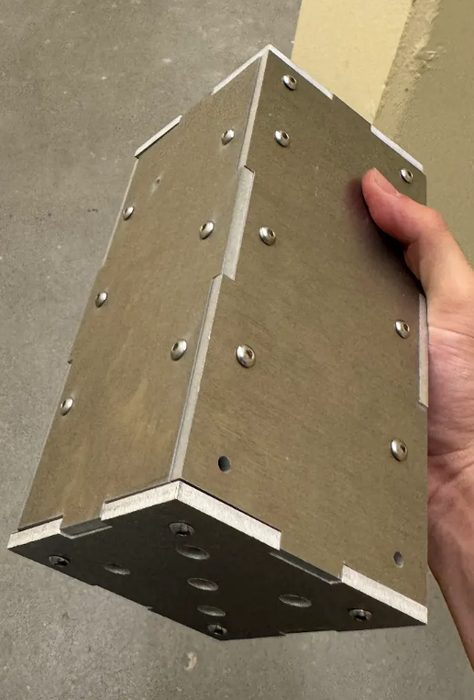
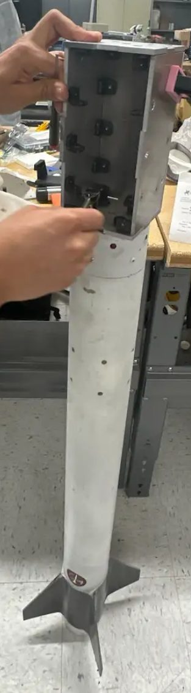
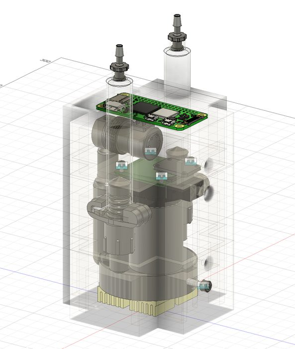
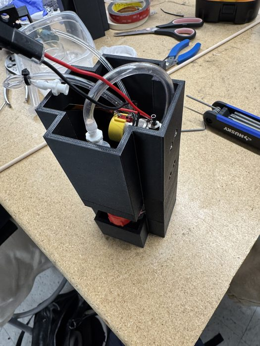
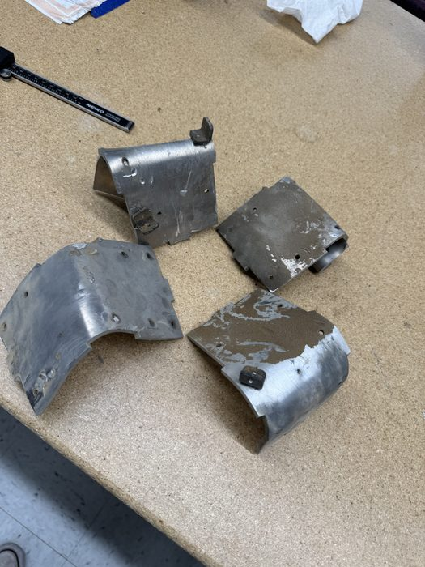

Overview
I was on part of the team that designed the payload for Stanford's IREC team (in Stanford Student Space Institute (SSI)). On one of the test flights/rocket prototypes I was in charge of the mechanical redesign of the payload. The payload was a 100mmx100mmx200mm box.
The payload was designed with all the scientific equipment to synthesize crystals in microgravity. The plan was the payload would fly into the air and the chemical reaction would start at the apogee of the flight, at which point it was ejected with the parachute for a couple more sections of microgravity. The entire process was only around ~10-20 seconds. There was a camera pointed at a petri dish inside the payload, which recorded the crystal growth. There were two separate plans to make crystals. The first was simply to inject a supersaturated liquid into a petri dish, where it would naturally start to form crystals. The second was to have two separate liquids that would mix the liquids and make crystals through the chemical reaction between them. I had to design for a payload that could do either option.
The biggest changes that I redesigned was the external structure. The previous payload was simply a 3D printed circular structure that fit within the rocket. The new version had to be part of the rocket and support it.


Interior/Exterior Design
The biggest challenge with the interior design was simply fitting every part inside. The complete system was:
Two syringes -> tubing -> solenoid with gas canister -> Petri Dish
There was also a large camera right above the petri dish and a large mess of electronics boards, tubing, and wiring. I also wanted to design the entire system to be very modular. We had experienced problems in the past where, if a wire or part broke, it would be very hard to repair (needing to take apart the entire system). I designed a multi-tiered system that was also easy to slide out of the metal frame. Each tier would have some section of parts attached to it, so you could simply take that tier out and edit the parts. The whole system was 3D printed. There was also a large hole that ran through one of the sides so that any tier can access another with tubes/wires, making that hole be the main wire/tube highway. A dedicated electronics tier was also very helpful for repairs. The tiers were organized as:
Petri Dish Tier -> Syringe/Camera Tier -> Gas Canister/Solenoid Tier -> Electronics Tier


After that first payload I actually redesigned another. This one kept the same exterior structure, but we changes how we wanted to bracket it. The new redesigned structure got rid of the tiers and replaced it with a simple two-tiered system, which ended up being super simple and robust. The 3D prints were very easy to repair and every part was easily accessible. That version was the best design of the payload, but it never flew due to the year ending
The biggest challenge of the interiors was making sure everything was very secure/vibration resistant. Because we had fragile glass petri-dishes and cameras and syringes full of chemicals, we did not want our payload to leak/be damaged. While we toyed with the idea of some sort of spring suspension, we found that if we designed everything to be extremely perfectly toleranced, then the vibrations would not break the equipment. Through 3D printed trials and multiple broken petri dishes, we found perfect tolerances for all of the interior parts. The petri dish was held in with a set screw to be able to be removed easily while also being very secure.
The exterior design was a different design challenge. The main forces and challenges facing it was that it was now part of the physical structure of the rocket (which goes mach1+). It needed to be very sturdy but also easy to take apart so we could load the chemicals safely (and at the test site). Our final version was able to integrate well with the rest of the rocket and also was very sturdy. It was made of laser cut aluminum.
Disaster.......
While the payload looked very beautiful and the interiors functioned well (on the ground), the rocket carrying the payload crashed (hard)(not because of the payload). The payload design did not cause the crash. The rocket ended up crashing into the ground at over Mach 1, completely decimating the interiors of the payload and completely squishing the exterior. The entire front half of the rocket disintegrated :(.
A more positive note for the payloads structure is that the payload is what stopped the rockets crash, meaning that we were able to recover (somewhat) everything behind the payload even if the payload got disintegrated.
